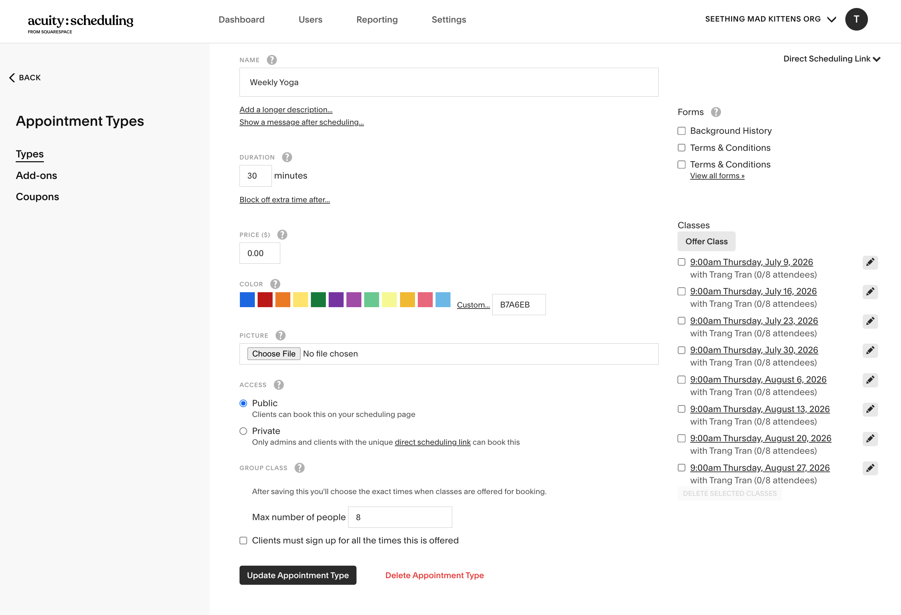
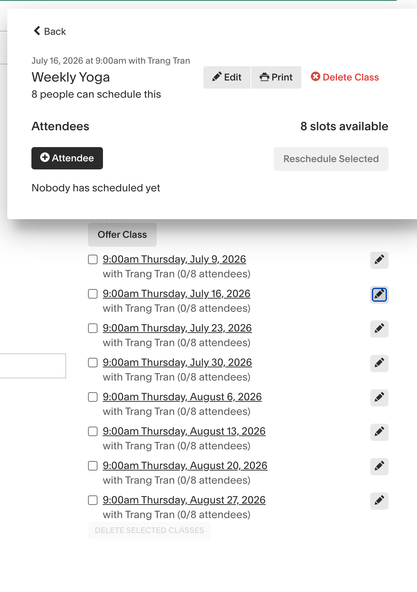
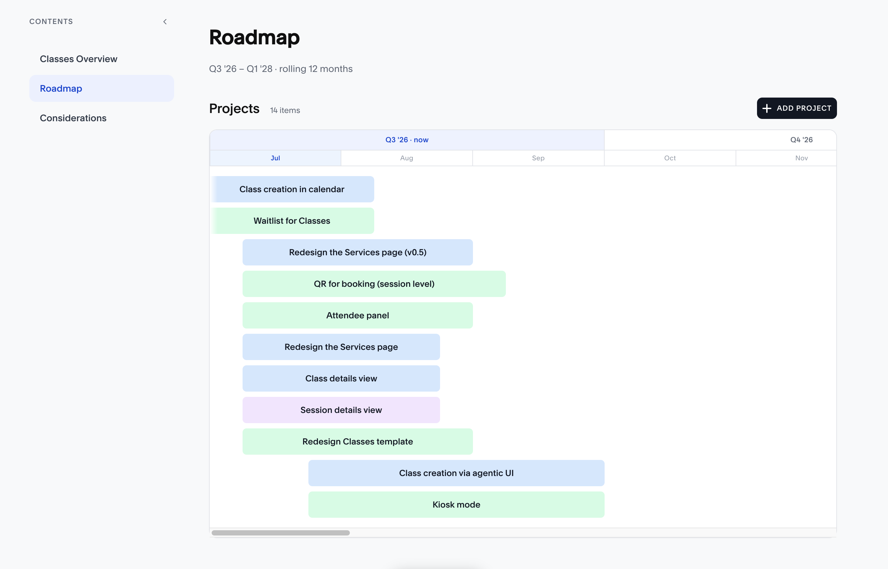
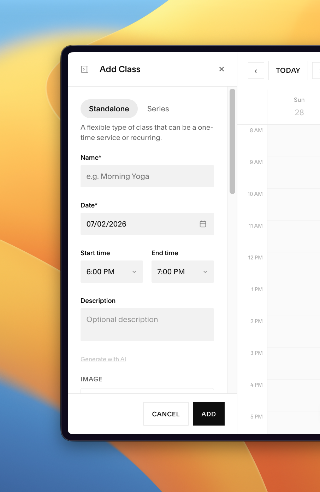
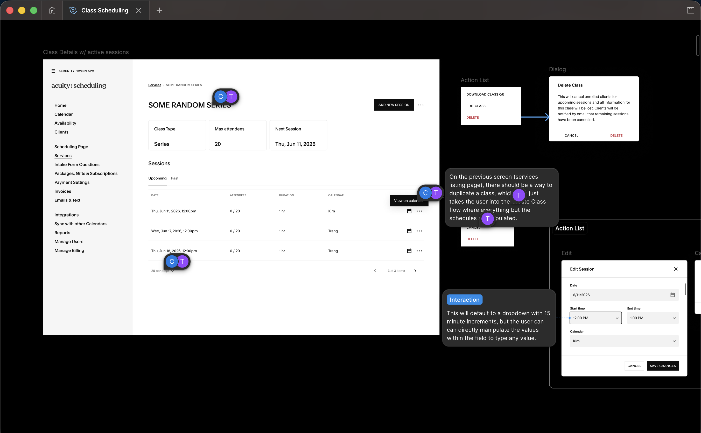
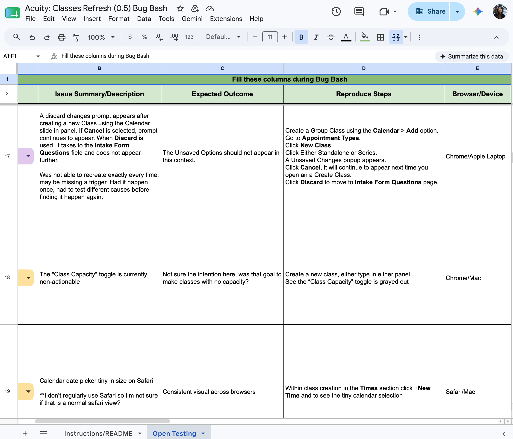

Acuity offers class scheduling in addition to 1:1 appointments, but it was haphazardly built, and customers who run classes could feel it. I spearheaded the launch of the new classes product and tapped into a new market of users.
Suddenly down a PM earlier in the year, I stepped up to pitch the concept of redeveloping our classes product to broaden our customer base beyond appointments. This was during widespread uncertainty as AI was mandated across the company, but I leveraged new tools and processes to share a vision that was bought in by Leadership and delivered in 2026.
Interim PM
xx% in new class-based users

The current class offering was not built to help customers scale sessions, and forced them to create classes without visibility into the rest of their schedule.
Acuity was originally built for 1:1 appointments, with classes added later as an afterthought. As a result, fitness studios, yoga instructors, and educators were left with an experience that was cobbled together and not designed around their workflows. Creating classes lacked calendar context, and editing recurring classes required updating each session individually.

Many recurring sessions can be created at once, but can't be updated in bulk afterwards. This small piece of UI was the only place where admins can see attendees for each session.

At the time, traditional processes were being challenged by AI. I used the opportunity to build an elaborate prototype with Claude Code, showing where we can go with classes. This vision was presented to Leadership and greenlit to become our focus for the year.
Bringing just one Figma screen I designed into Claude, this vision prototype was spun up in just a week and tested well in user research sessions. Using AI tools accelerated the discovery process, exposed edge cases early, and made it easier for me to share the narrative of the ideal state and the path needed to get there.
Building out the class vision would be a massive multi-quarter effort, so I had to show that we could deliver incremental value by breaking it into smaller milestones.
With support from my ETM, I proposed 3 tracks of work that would mirror the lifecycle of how class-based businesses use our product and how they should be sequenced:
Class creation experience.
Class management experience.
Client booking experience.
The class creation involves introducing a parent-child inheritance model where sessions adopt changes at the class level. The management work would give users the ability to view all sessions and attendees associated to a class, in one place. Lastly, the client booking experience work entails improvements at the booking level, making the booking page easy to navigate for classes.

Since I kickstarted the project with a fully interactive prototype built by AI, the concepting step was all about refinement—using the exact design system components, creating detailed mobile screens, and carefully planning the delivery phases.
I hosted my Claude-built prototype on Vercel to be the source of truth. However, stakeholders found it difficult to give feedback and see the various states without having to go through the flows. I ended up building an annotation UI on top of the prototype to allow people to leave comments, a way to switch between concepts for each milestone, and a "canvas mode" to see all screens.
My concept pushed a distinction that users were already making in their heads: Standalone Classes vs. Series Classes.
A Standalone Class — a one-time or recurring session that clients can join without committing to all. Ex. a weekly Yoga class.
A Series Class — a multi-session class scheduled as a set. Ex. a 6-week pilates course.

This was an important shift in how these two class types were presented. The current experience allowed users to switch between the two at any point, creating negative downstream effects in payment and client expectations. These are meant to be two separate products with distinct uses.
For users offering recurring classes, the current experience made it impossible to edit in bulk. I introduced edits at the class level, where changes here propagate into individual sessions.
Our research sessions taught us that people wanted to see what the rest of their schedule looked like before committing to times during class setup.
We responded with making class creation to happen in the Calendar UI, the most natural place for users. Users can edit class sessions directly from here, or they can go to the Services page where they can make class level changes.
We dedicated a whole surface to see all past and upcoming sessions for a class, and the attendees for each. This high altitude view gave admins the visibility that they've always wanted while managing their classes.
For months, we relied on the Claude prototype to build off of. After concerns from engineers about its tradeoffs, I made the decision to jump back into Figma for sake of better collaboration and progress.
The development team had trouble figuring out from the prototypes what were MVP and was Vision. With Figma, you'd have explicit documentation calling out which artboards are associated with each, which would lead to more engagement from engineers. My proprietary comment tools and markdown files couldn't replace that.

During development, we ended up foregoing a lot of the niceties that I included in the vision prototype.
We were already behind on schedule so I made some prioritization calls to drop some of the extra interactions I initially included. None of these things took away from the jobs to be done, so everyone was in agreement.
The idea was to launch the new class creation experience first, then class management later. But not without having an open bug bash with the CustOps team.
Since this is a huge change to the product, we assembled a team of CustOps members to test out the new experience for about a week. With their help, we able to document about two dozen bugs, which our entire team of engineers swarmed on for the next week. I also made a few design changes based on some of that feedback (mainly around messaging).

Once we were comfortable for the product to be out in the wild, we put it into production for 5% of our users. No issues cropped up for a week, so we ramped up to 10%. At this time, we were putting the finishing touches on the management experience.
After one month of delivering the new class experience, we saw remarkable numbers: 33% increase in class creation with an outpour of positive feedback delivered to us via CustOps support tickets.
talk about success metrics and aftermath here!